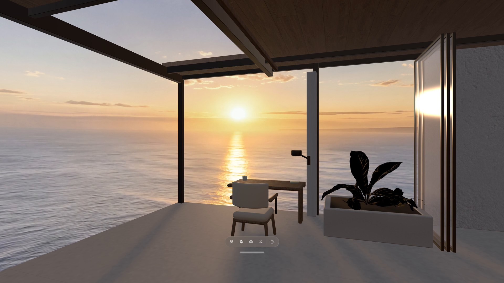
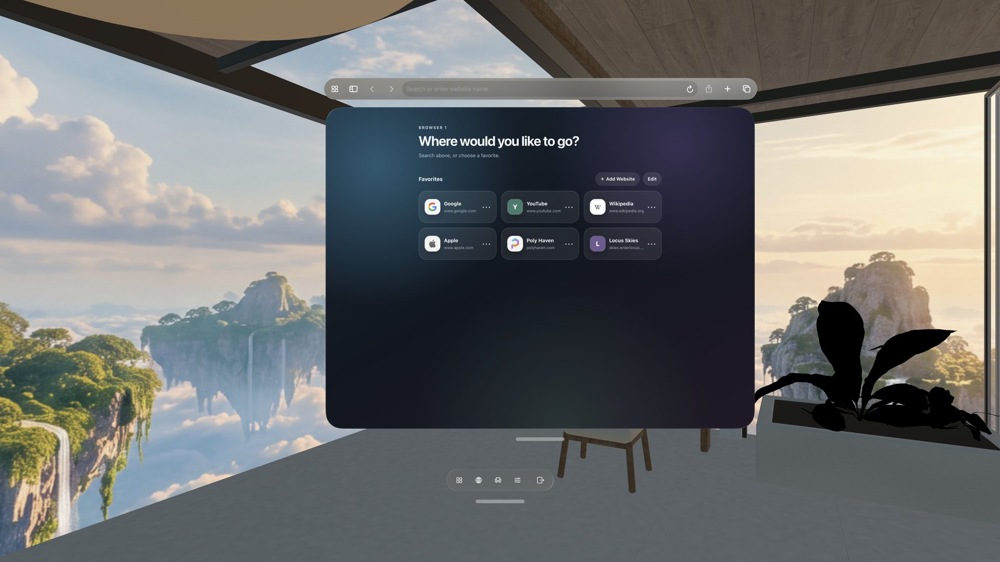

Locus for Apple Vision Pro
A workspace.
With a view.
A 3D Room. A 360° View. Your everyday web pages.
All together in a place of your own.
Available now for Apple Vision Pro. Core features are free to use, with optional in-app purchases.New in Locus 1.4.6
A different place.
The same you.
Morning light at a café. A quiet night in the mountains. Saturn just outside your window.
Explore the GalleryMake room for
your everyday.
Open the pages you need.
Keep a little space for yourself.
Arrange web pages around your desk. Choose a seat, change the scenery, and settle into a Room that feels right.
01A Room to sit in
02A View beyond the windows
03The web, within reach
Set up your first Place 
A place that starts
with your imagination.
Bring your own panorama. Build your own Room. Make somewhere you want to return to.